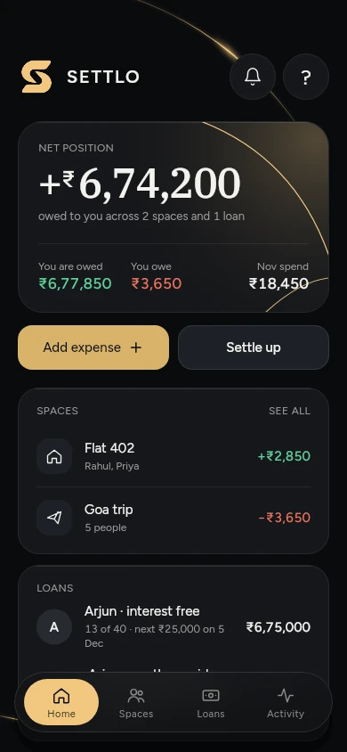
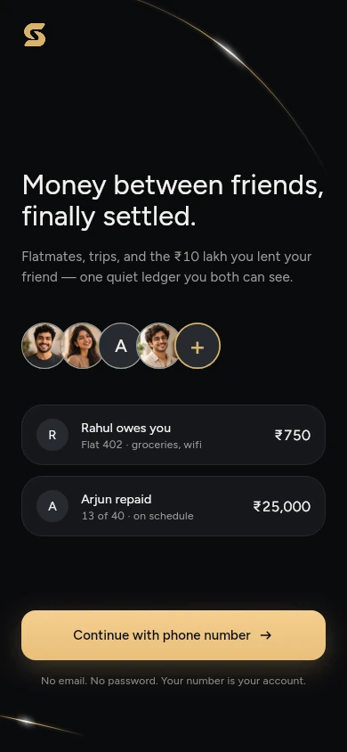

MADE FOR YOUR PEOPLE
Good friends.
Clear balances.
Split expenses with flatmates. Track money lent to friends. Keep the money clear, and the friendship easy.
Ask for beta accessiPhone · TestFlight beta Android later.

Real beta screen · illustrative balances
A LITTLE CLARITY GOES A LONG WAY
From “I’ll pay”
to all settled.
Rent, groceries, a weekend away, or a friend who needs a hand. Give every shared rupee a place.
- 01
Make room for everyone.
Create a space for your flat or trip. Add people by phone number and split expenses equally or your own way.
- 02
Keep a loan a loan.
Record money lent or borrowed between two people. Follow the repayments without mixing them into the grocery bill.
- 03
Settle up via UPI.
Open your UPI app with the amount filled in. Pay there, then record it in Settlo. Paid in cash? Record that too.
- 04
Let the other person confirm.
A recorded payment needs their confirmation. Both people have a say in the record.

BUILT AROUND REAL LIFE
Less keeping tabs.
More living together.
Patchy signal? Keep going.
Saved records stay on your phone. Add changes offline; they sync when you’re back online.
A nudge, right on your iPhone.
On supported iPhones, a Live Activity keeps a settle-up waiting for your confirmation on the Lock Screen and Dynamic Island.
A record you can take with you.
Export a space as CSV and a summary PDF, or download a loan statement. Made on your phone, shared where you choose.
A phone number is enough to invite.
Add someone by their number. They verify it and choose whether to accept. No address-book upload.
Stored in Mumbai, India.
Account and shared data are hosted in Supabase’s Mumbai region.
Your contacts stay yours.
Settlo doesn’t read or upload your address book. No ads, analytics or tracking.
You can leave.
Request account deletion at settlo@hellojosh.studio. Shared financial records remain with the other people; the policy explains what stays.
BEFORE YOU GET STARTED
A few good questions.
Can I use Settlo on my phone?
Settlo is an iPhone TestFlight beta. Email us to ask about beta access. Android is planned for later; there is no public App Store or Google Play release yet.
How do I split expenses with flatmates?
Create a space for your flat, add people by phone number, and record who paid. Split expenses equally or use exact amounts, percentages or shares. Settlo keeps the balances together.
Can I track money lent to friends?
Yes. Record a loan between two people and track repayments separately from shared expenses. A repayment counts only after the other person confirms it.
Does Settlo make the UPI payment?
No. Settlo opens your UPI app with the amount and payee details filled in. You approve the payment there, record it in Settlo, and the other person confirms. Settlo cannot see whether a payment went through.
What happens when I am offline?
Your saved records stay available on your phone. Changes made offline are queued and sent when you reconnect. Sign in online first, and let pending changes sync before signing out.
Can I delete my account?
Yes. You can request account deletion at settlo@hellojosh.studio. Your profile and sign-in are removed; shared expenses, loans and their history stay in the other people’s records. The privacy policy explains the details.
A CLEARER WAY TO SHARE
Make money the easy part.
Ask for beta accessiPhone · TestFlight beta. Android later.